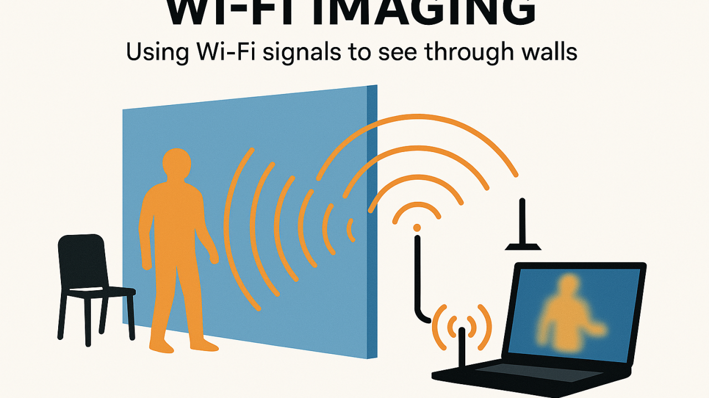
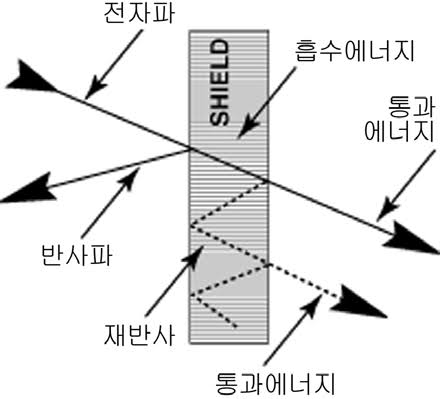
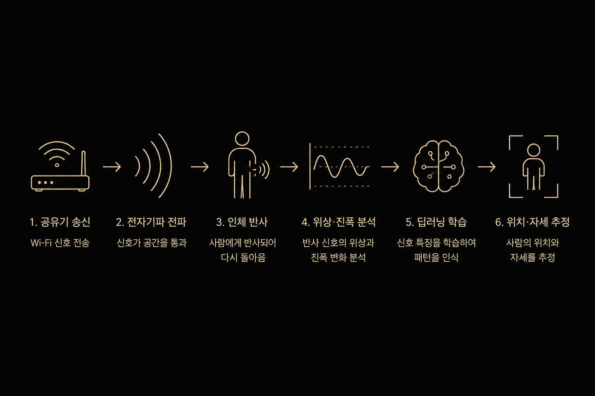
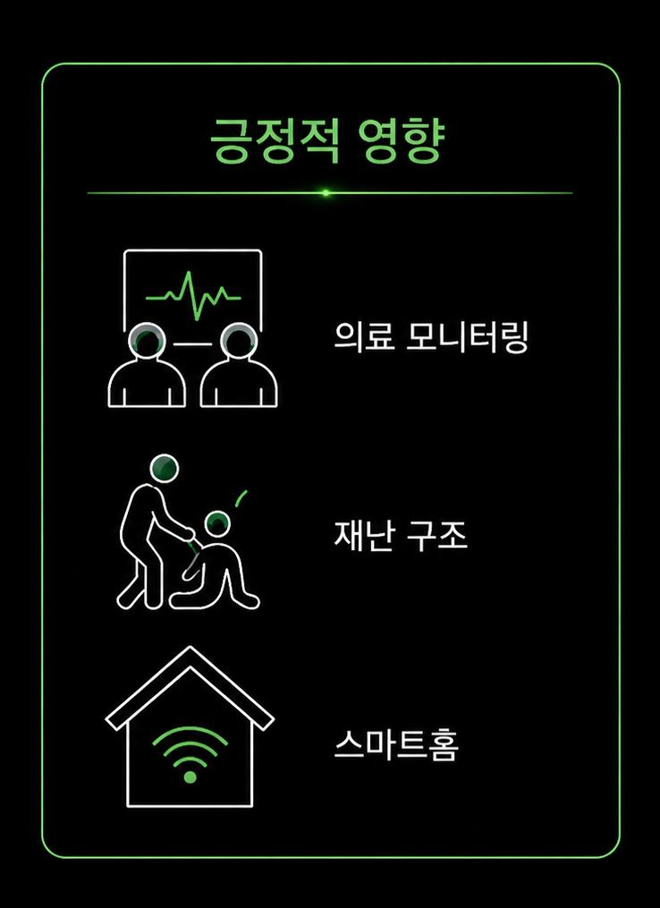
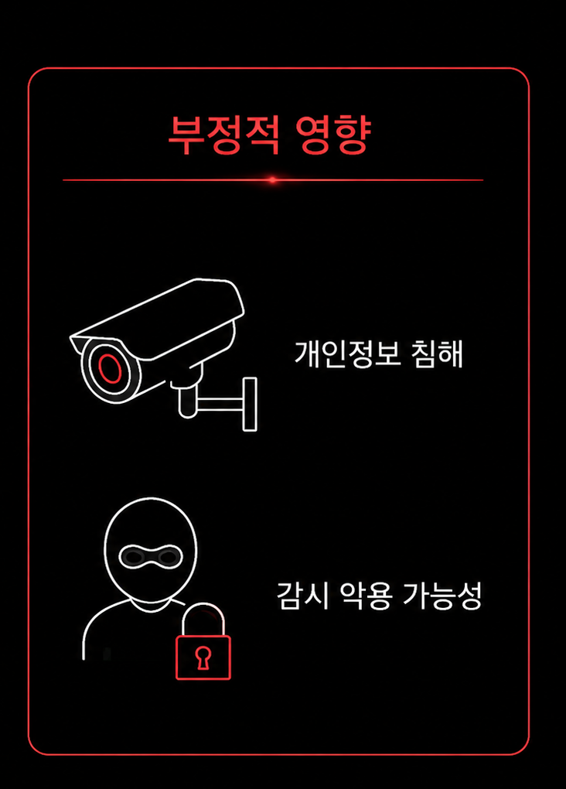

전자기파와 인공지능이 만드는 미래 기술
학번 : 30615
이름 : 박희준
일반 공유기의 Wi‑Fi 신호를 활용하여 벽 너머 사람의 위치와 움직임을 추적하는 기술



긍정적 영향 : 의료 모니터링, 재난 구조, 스마트홈

부정적 영향 : 개인정보 침해, 감시 악용 가능성

이번 탐구를 통해 평소 인터넷을 사용할 때만 접하던 Wi-Fi 신호가 단순한 통신 수단이 아니라 사람의 위치와 움직임까지 분석할 수 있는 첨단 기술의 기반이 된다는 점을 알게 되었다. 특히 물리학Ⅱ에서 배우는 전자기파의 반사, 투과, 흡수와 같은 개념이 실제 최신 AI 기술과 연결된다는 사실이 매우 인상 깊었다. 또한 Wi-Fi Sensing 기술이 의료 모니터링, 재난 구조, 스마트홈 등 다양한 분야에서 사람들의 삶을 더욱 안전하고 편리하게 만들 수 있다는 점에서 큰 가능성을 느꼈다. 반면, 이러한 기술이 개인정보 침해나 감시 문제로 악용될 수 있다는 점도 알게 되었으며, 기술 발전과 함께 윤리적·사회적 문제를 해결하기 위한 노력 역시 중요하다고 생각하게 되었다. 이번 탐구를 통해 물리학이 단순한 이론이 아니라 미래 기술을 이해하고 발전시키는 데 필요한 중요한 학문이라는 것을 다시 한번 느낄 수 있었습니다
참고자료 : Carnegie Mellon University, IEEE 논문